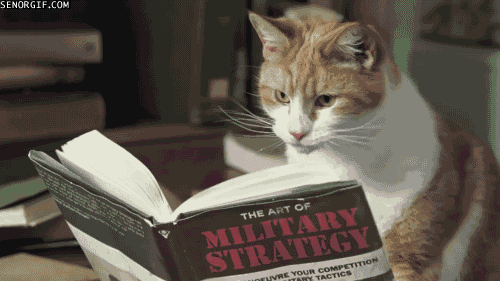

Начались проверки домашнего задания. На техническую дисциплину мы приносили работы, которые делала в Иллюстраторе, на проектирование - мудборды. На программировании мы изучали основы верстки в HTML и CSS. Ничего сложного пока не происходило: все дисциплины были интересными и на них хотелось ходить всегда, потому что от нас ничего не требовали. Но это было ненадолго...

У группы появился свой аккаунт в Инстаграме. Все торжественно поклялись не выкладывать туда ерунду (только на денечек в истории). Также началась внеучебная деятельность: различные студенческие организации проводили свои промо, я была рада вступить в "Зеленую Вышку" вместе с несколькими однокурсниками, а еще сходить на фестиваль "Клевер" с одногруппниками (мы оставили там кучу пластиковых крышек на переработку и книги на буккроссинг. Планета не спасена, но уважение к себе немного ближе поднялось к уровню "восстановлено").
Проектирование начало казаться немного страшненьким: началась работа над флагами. Их приходилось корректировать, а также приступать к графическим образам. В это же время я решила поменять тему своего проекта и мне пришлось всех догонять. Также начались некоторые сложности с программированием: это перестало быть дисциплиной, над которой достаточно посидеть часочек. На то, чтобы успеть сделать домашнее задание для всех дисциплин уходили все выходные.
У группы появился свой мемный паблик (ссылка не прикреплена в целях защиты от праведного гнева персонажей произведений).